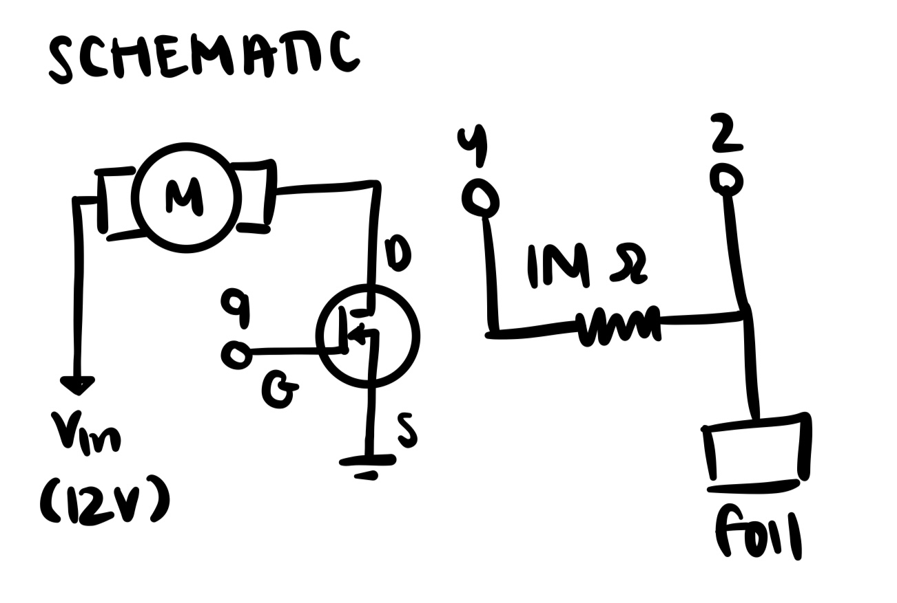
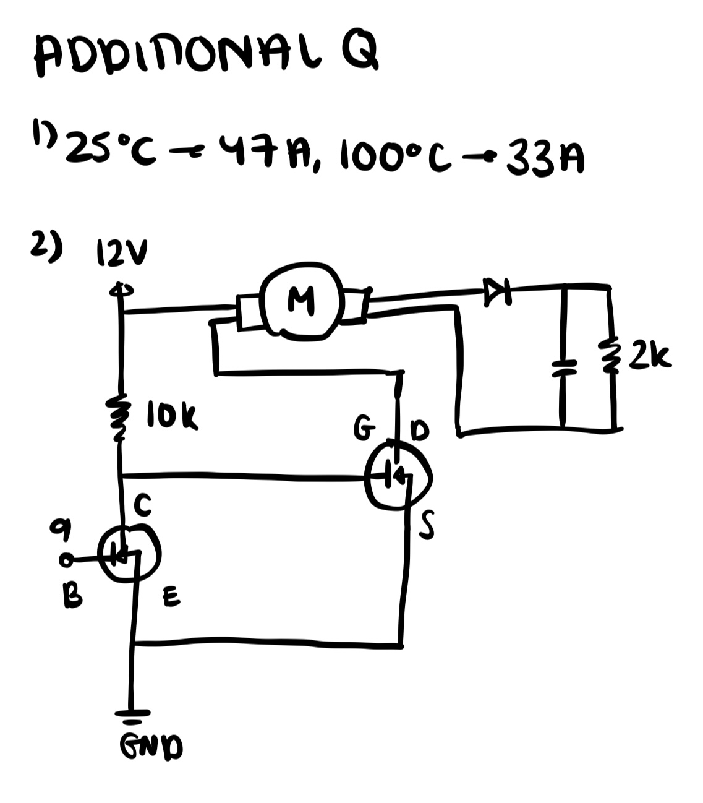
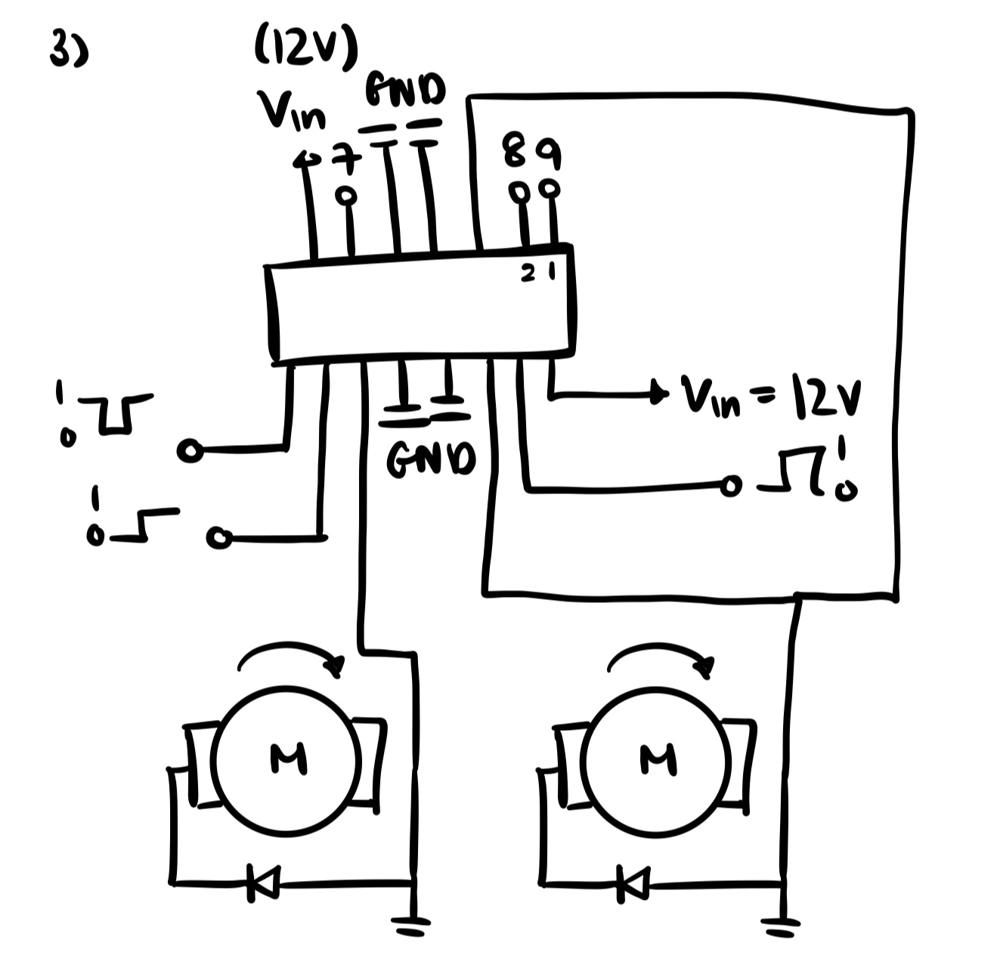
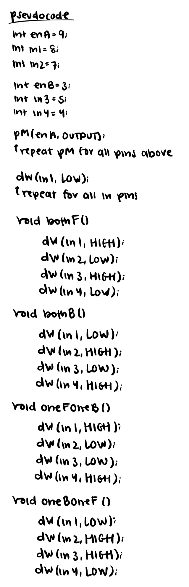

My Arduino Board & Schematics

My schematics for DC motor & capacitive touch sensor!
Here is all the documentation for assignment 5!

My schematics for DC motor & capacitive touch sensor!
<h1>My Arduino Code!</h1>
<p>
#include
// cap sensor: https://web.archive.org/web/20160408011141/http://playground.arduino.cc/Main/CapacitiveSensor
// https://lastminuteengineers.com/l293d-dc-motor-arduino-tutorial/
CapacitiveSensor cs_4_2 = CapacitiveSensor(4, 2); // set up cap sensor
int motor = 9; // set up motor pin
unsigned long csSum = 0; // keep track of sensor touches
void setup() {
Serial.begin(9600); // start serial
pinMode(motor, OUTPUT); // enable pin set to pin
digitalWrite(motor, LOW);
}
bool isTouched() { // function for if cap sensor is touched
long cs = cs_4_2.capacitiveSensor(5); // sensor resolution is 5
Serial.println(cs); // print sensor value
if (cs > 100) { // arbitrary number to screen for noise
csSum += cs; // add sensor reading to cssum
if (csSum >= 3800) { // if the sensor is touched (cssum is greater/equal to threshold)
csSum = 0; // reset cssum
cs_4_2.reset_CS_AutoCal(); // stops readings
return true; // returns that the sensor has been touched
}
} else { // otherwise
csSum = 0; // timeout caused by bad readings
}
return false; // return that sensor hasnt been touched
}
void motorOn() {
digitalWrite(motor, HIGH); // turn motor on
for (int i = 0; i < 256; i++) { // accelerate from zero to maximum speed
analogWrite(motor, i); // set motor speed
delay(20); // delay
}
for (int i = 255; i >= 0; --i) { // decelerate from maximum speed to zero
analogWrite(motor, i); // set motor speed
delay(20); // delay
}
digitalWrite(motor, LOW); // turn motor off
}
void loop() {
bool touched = isTouched(); // stores value returned from istouched function
if (touched == true) { // if touched is true
motorOn(); // call motorOn function
}
delay(100); // delay
}
</p> My Arduino Code



My answers to the additional questions